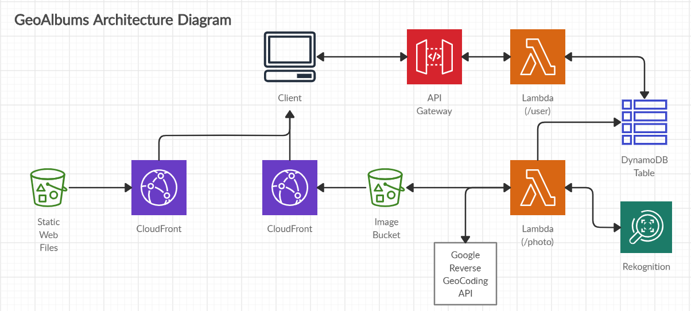
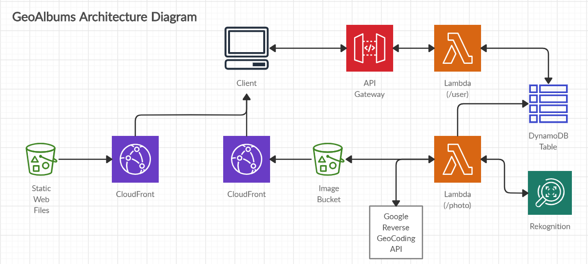

Personal Projects
Covered CA Prescription Search
This is a tool to compare different Covered California market plans, specifically from the perspective of prescription drug coverage/costs. Users are able to search multiple prescription drug names/brand names, aggregating the results across multiple providers. The source of the data behind the search functionality are the original PDFs of the provider formularies scraped using a collection of ad-hoc scripts. My goal was to (1) create a simple tool that might assist people going through the process of researching market plans and (2) serve as a POC for functionality that can be made available/enhanced on the CoveredCA website provided access to the underlying raw data is possible.
Technology Used
- Front-End: JavaScript (React), Hooks, Context API, Material UI
- Back-End: Amazon API Gateway, AWS Lambda (Python), Amazon S3, Amazon S3 Select
- Data Processing: Python (Tabula)
- Hosting: Amazon CloudFront, Amazon Route53
TRY ME! Hover over the screenshot to see an animation or go directly to the tool
GeoAlbums
This application is meant to view your photos by location (GPS Coordinates) and provide filters based on the content of the photos, e.g. Amazon Rekgnotion, Reverse GeoCoding.
Upon load, there are references to pre-loaded images that the user can interact with to get an idea behind application functionality. The user can also create an own account and upload their own photos. The current version can be thought of as a Proof-Of-Concept. I intend to work on this as a longer term project, specifically, targeting mobile platforms.
Technology Used
- Front-End: JavaScript (React), Hooks, Context API, Material UI
- Back-End: Amazon API Gateway, AWS Lambda (Python), Amazon S3, Amazon DynamoDB
- Image Processing: Amazon Rekognition, Python (Pillow, ExifRead), Google Maps Reverse GeoCoding API
- Hosting: Amazon CloudFront
TRY ME! Hover over the screenshot to see an animation or go directly to the application
 

Work Experience
ICW Group, San Diego CA
Software Engineer III | Jan 2020 - May 2020
Data Science Specialist | Apr 2019 - Jan 2020
Sr Data Analyst | Sep 2017 - Apr 2019
Notable Projects
Claims Examiner Reserving Tool (CERT)
- Technical Lead/Lead Developer on an internal application used by our internal Claims Examiners in calculating/projecting costs on open Workers Compensation Claims
- Prototyped and proposed internally developed solution to executive stakeholders
- Converted the application from a legacy MS Excel based proprietary 3rd party platform to multiple containerized services
- Exposed internal business logic as REST API allowing for batch testing exercises and integration with other systems
- Technical representative on committee developing future roadmap for product
Technology/Tools Used: Python (Flask), HTML/CSS/Jinja2 Templates, JavaScript (Jquery), Bootstap, SQL Server, Docker, GitLab, JIRA
Underwriting Department Audit Tool (UDAT)
- Developer on an internal application used by our internal Underwriting Team in auditing policy applications for accuracy and conformity to company standards
- Developed across entire stack from front-end components to back-end REST APIs to DB Stored Procedures
Technology/Tools Used: Python (Flask), JavaScript (React), Redux, Bootstrap, SQL Server, Docker, GitLab, JIRA
Data Analytics Specialist | Jun 2016 - Sep 2017
Data Analyst | Feb 2016 - Jun 2016
Actuarial Analyst | Sep 2014 - Feb 2016
Notable Accomplishments
- Enhanced our Workers Compensation Claims Examiner Reserving Tool by designing and deploying models to predict external Defense Attorney and Medical Bill Review costs. Model development work was done in R.
- Enhanced our Workers Compensation pricing model by developing a simulation procedure in VBA to test model behavior and changes in states where we lacked experience.
- Used VBA to automate a Personal Auto Line of Business report improving it from a 7-10 day manual effort involving two FTE’s to a 2 day effort that is ran overnight.
Awards & Certifications
AWS Certified Solutions Architect - Associate
Jul 2020
AWS Certified Cloud Practitioner
Jun 2020
2019 ICW Group Executive Management Committee Award
Mar 2020
2017 ICW Group Executive Management Committee Award
Mar 2018
2015 ICW Group CEO Award
Mar 2016
Education
MS in Social Sciences (Economics)
California Institute of Technology (CalTech)
BBA in Finance (Minor in Economics)